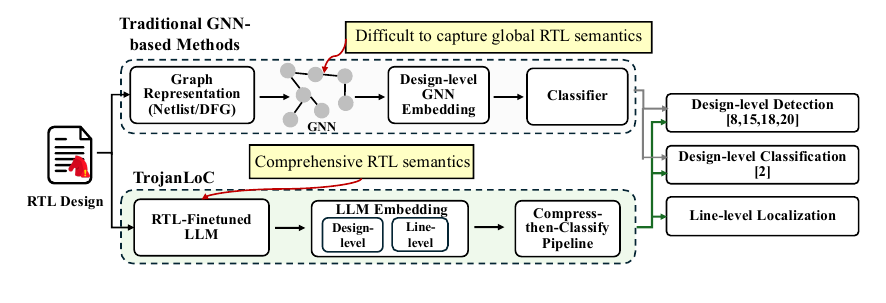

R / 01
Current focus
LLM-aided Electronic Design Automation
Agentic and tool-guided methods for RTL generation, SystemVerilog assertions, design-space exploration, and hardware security analysis.
Postdoctoral researcher · NYU
My research brings large language models into electronic design automation—making chip design, verification, and security more capable, efficient, and trustworthy.
I work across abstraction levels—from natural-language hardware intent and RTL code to logic networks and transistor-level circuits.
My current focus is on feedback-driven AI systems that can reason about hardware, learn from EDA tools, and produce designs that are not only functional, but also efficient and secure.
Current focus
Agentic and tool-guided methods for RTL generation, SystemVerilog assertions, design-space exploration, and hardware security analysis.
PhD research
Exact and optimization-based approaches that minimize logic networks, arithmetic circuits, and standard cells.
Efficient AI hardware
Energy-efficient arithmetic through controlled approximation, workload-aware error budgeting, and model retraining.
Selected projects connecting foundation models, formal methods, and circuit optimization.
An LLM-based framework for design-level detection, classification, and line-level localization of RTL hardware Trojans.

RAG and fine-tuning for translating natural-language specifications into SystemVerilog assertions, improving functional match by 58.42% over GPT-4o-mini.
View repositoryThe first SAT formulation of transistor-network synthesis, producing minimum-transistor implementations across benchmark functions.
View repository14 peer-reviewed papers, including 9 as first or co-first author. Full list and details are available in my CV.
ICCAD · Regular paper
Weihua Xiao, Zeng Wang, Minghao Shao, Raghu Vamshi Hemadri, Chang Meng, Johann Knechtel, Muhammad Shafique, Ozgur Sinanoglu, Siddharth Garg, and Ramesh Karri
DATE
Weihua Xiao, Jason Blocklove, Johann Knechtel, Ozgur Sinanoglu, Kanad Basu, Jeyavijayan Rajendran, Siddharth Garg, and Ramesh Karri
NeurIPS
Patrick Yubeaton, Andre Nakkab, Weihua Xiao, Luca Collini, Ramesh Karri, Chinmay Hegde, and Siddharth Garg
MLCAD
Weihua Xiao, Derek Ekberg, Siddharth Garg, and Ramesh Karri
DAC · 23% acceptance rate
Weihua Xiao*, Tingting Zhang*, Xingyue Qian, Jie Han, and Weikang Qian · *Equal contribution
ICCAD · 23% acceptance rate
Weihua Xiao, Shanshan Han, Yue Yang, Shaoze Yang, Cheng Zheng, Jingsong Chen, Tingyuan Liang, Lei Li, and Weikang Qian
Postdoctoral Researcher
Visiting Scholar
PhD · Electronic Science & Technology
Bachelor · Communication Engineering
Teaching at NYU
Selected honors
05 Contact